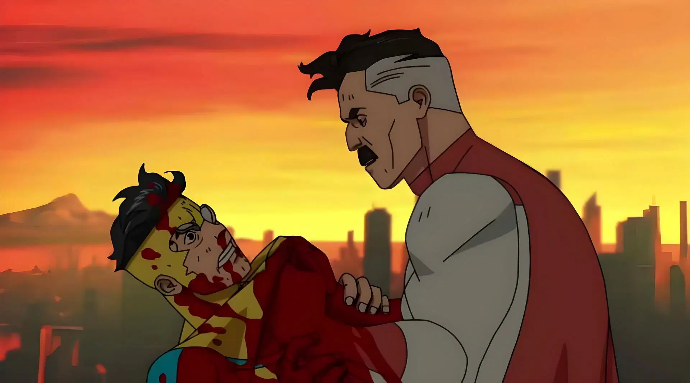

Invencível Temporada I
Sinopse de Invencível
Mark Grayson era um adolescente normal, mas o pai dele é o Omni-man o MAIOR super-herói da terra, quando Mark ganhou os seus poderes, ele queria seguir os passos do pai, mal sabia ele que o seu pai não era quem ele imaginava que era.

Lançamento: 25/03/2021
Invencível Temporada II
Sinopse da segunda temporada de Invencível
Logo após Nolan/Omni-man demonstrar a sua verdadeira face e fugir do planeta Terra, mark se sente mal em continuar sendo um herói por conta que ele não conseguiu salvar as vidas das pessoas que o seu pai matou, mas uma missão inesperada lhe aguarda.